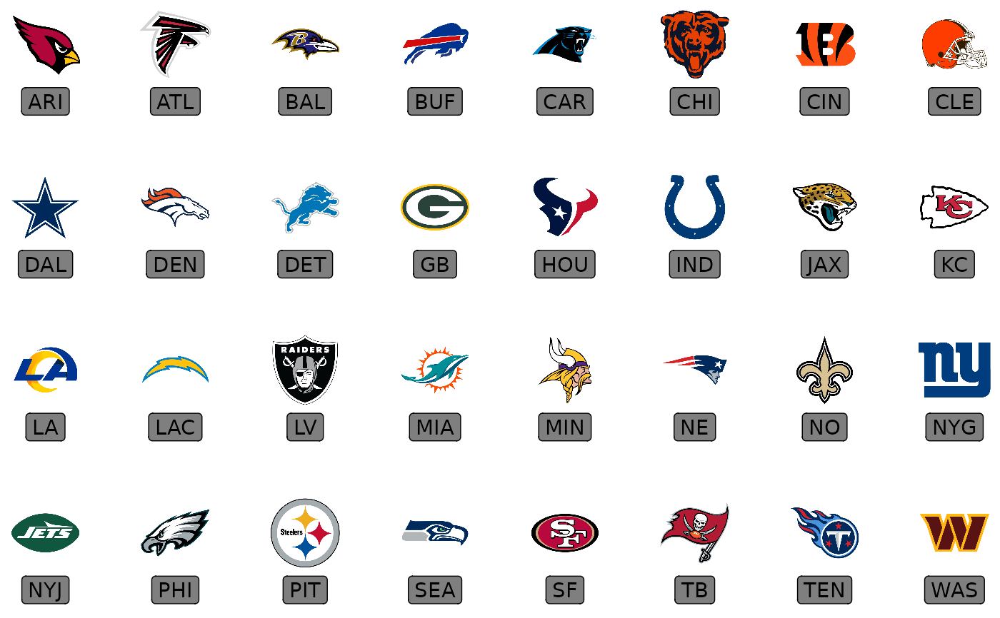
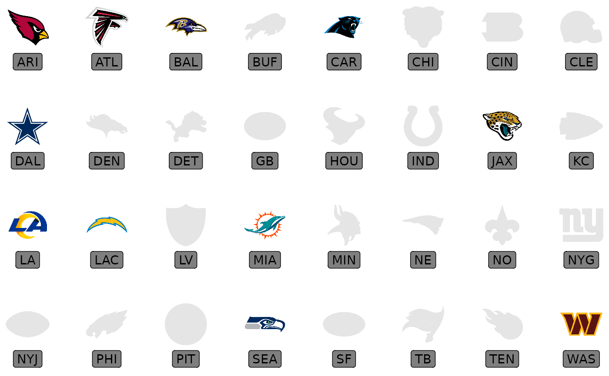

This geom is used to plot NFL team logos instead of points in a
ggplot. It requires x, y aesthetics as well as a valid NFL team abbreviation.
The latter can be checked with valid_team_names().
geom_nfl_logos( mapping = NULL, data = NULL, stat = "identity", position = "identity", ..., na.rm = FALSE, show.legend = FALSE, inherit.aes = TRUE )
| mapping | Set of aesthetic mappings created by |
|---|---|
| data | The data to be displayed in this layer. There are three options: If A A |
| stat | The statistical transformation to use on the data for this layer, as a string. |
| position | Position adjustment, either as a string, or the result of a call to a position adjustment function. |
| ... | Other arguments passed on to |
| na.rm | If |
| show.legend | logical. Should this layer be included in the legends?
|
| inherit.aes | If |
geom_nfl_logos() understands the following aesthetics (required aesthetics are in bold):
x - The x-coordinate.
y - The y-coordinate.
team_abbr - The team abbreviation. Must be one of valid_team_names().
alpha = NULL - The alpha channel, i.e. transparency level, as a numerical value between 0 and 1.
angle = 0 - The angle of the image as a numerical value between 0° and 360°.
hjust = 0.5 - The horizontal adjustment relative to the given x coordinate. Must be a numerical value between 0 and 1.
vjust = 0.5 - The vertical adjustment relative to the given y coordinate. Must be a numerical value between 0 and 1.
width = 0.1 - The desired width of the image in npc (Normalised Parent Coordinates).
height = 0.1 - The desired height of the image in npc (Normalised Parent Coordinates).
# \donttest{ library(nflplotR) library(ggplot2) team_abbr <- valid_team_names() df <- data.frame( a = rep(1:8, 4), b = sort(rep(1:4, 8), decreasing = TRUE), teams = team_abbr ) # keep alpha == 1 for all teams including an "A" matches <- grepl("A", team_abbr) df$alpha <- ifelse(matches, 1, 0.2) # scatterplot of all logos ggplot(df, aes(x = a, y = b)) + geom_nfl_logos(aes(team_abbr = teams)) + geom_label(aes(label = team_abbr), nudge_y = -0.35, alpha = 0.5) + theme_void()# apply alpha via an aesthetic from inside the dataset `df` ggplot(df, aes(x = a, y = b)) + geom_nfl_logos(aes(team_abbr = teams, alpha = alpha)) + geom_label(aes(label = team_abbr), nudge_y = -0.35, alpha = 0.5) + theme_void()# apply alpha as constant for all logos ggplot(df, aes(x = a, y = b)) + geom_nfl_logos(aes(team_abbr = teams), alpha = 0.6) + geom_label(aes(label = team_abbr), nudge_y = -0.35, alpha = 0.5) + theme_void()# }